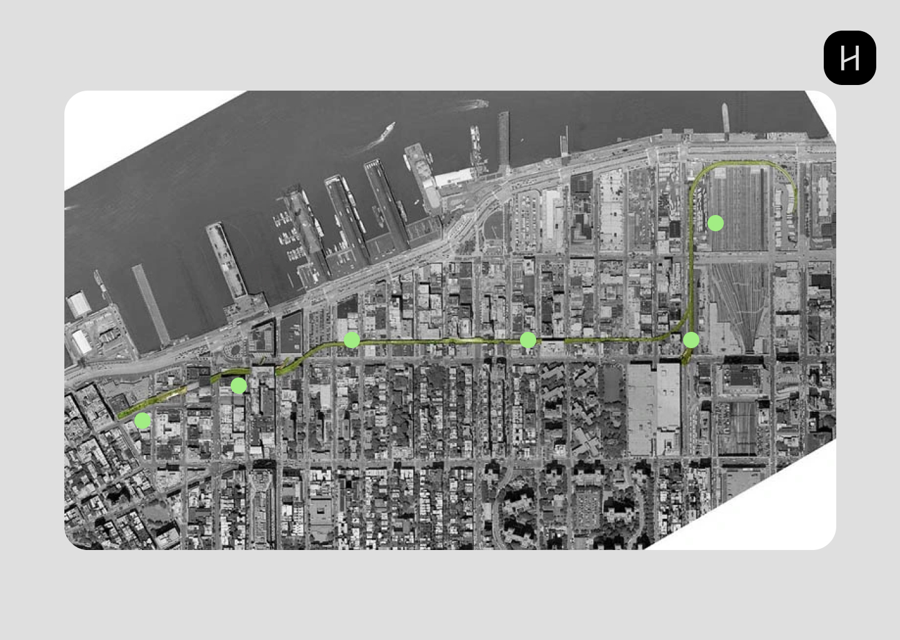
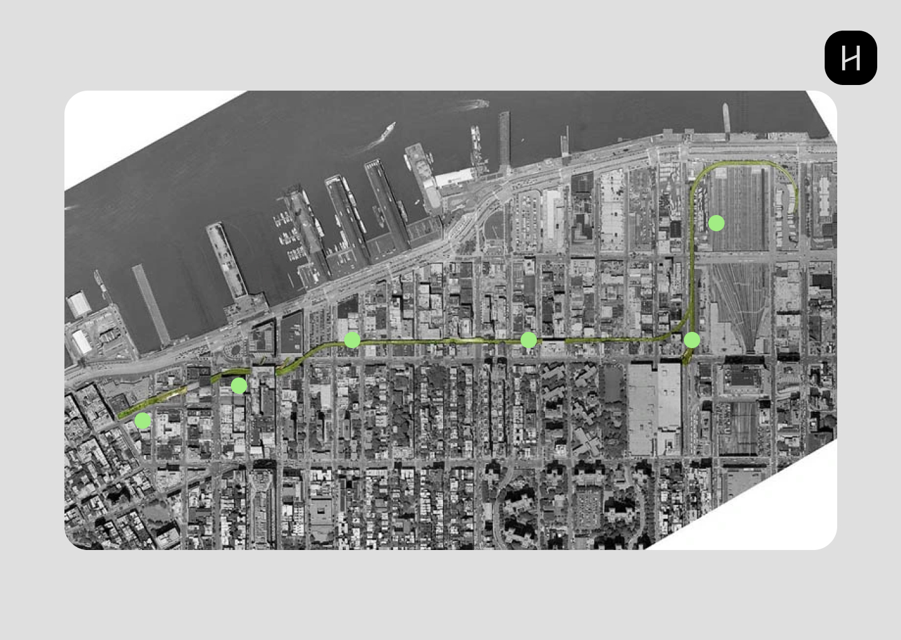

About the project
The High Line is a public park that runs for 1.45 miles (2.33 km) along the west side of Manhattan in New York City. It was built on an abandoned elevated railway line from Gansevoort Street in the Meatpacking District to West 34th Street. The park is approximately 30 feet (9 meters) above street level and provides visitors with unique views of the city's architecture and urban landscape. The park features a variety of native plants, including perennials, grasses, and trees, that were selected to thrive in the harsh conditions of the elevated environment. There are also several art installations and sculptures throughout the park, including works by renowned artists such as Jeff Koons and Barbara Kruger. The High Line opened to the public in 2009 and has since become a popular destination for locals and tourists alike. It is free to visit and open year-round, although specific hours may vary depending on the season. The park also hosts various events and programs throughout the year, such as guided tours, music performances, and food festivals. The High Line project was initiated by a non-profit organization called Friends of the High Line, which was founded in 1999 by two local residents who were concerned about the future of the abandoned rail line. The project was funded through a combination of public and private sources, including the City of New York, the federal government, and individual donors.
For this narrative webstie, I wan to use the High Line as a case study to look at the positive impacts of urban development in a large city. In the website, this sections will be the “About”, where I can expand more on the topic in a interactive way. Urban development projects have the potential to bring about numerous positive changes to a city. Such projects can stimulate economic growth by creating new jobs and businesses, increasing property values, and attracting investment. They can also improve the quality of infrastructure, including transportation, utilities, and public amenities, making cities more livable and sustainable. Additionally, urban development projects can provide environmental benefits, such as reducing greenhouse gas emissions, promoting biodiversity, and improving air and water quality. They can also enhance social cohesion and community engagement, promoting civic pride and providing opportunities for social interaction and cultural enrichment. Furthermore, urban development projects can improve public health by providing access to green spaces, reducing air pollution and heat island effects, and promoting physical activity. Overall, urban development projects have the potential to create more livable, sustainable, and equitable cities for all. However, it is important to consider the potential negative impacts of such projects and work to mitigate them, particularly in terms of social equity and environmental justice.
For the overall UI of my website, I want to have a horizontal scroll throughout the website. The main page will be a long-scroll page displaying interactive animation as the user scrolls. When the user visits the site, they will be greeted by the landing page with animation prompting them to scroll to the right. The second page will have general information about the High Line. Following that, there will be a timeline and some background information on how the High Line came to be. A possible animation to include is when the user hovers on a card, an image of the High Line at that time could pop up. The next page is an interactive map, which is one of the main features of the website. The page will display the overall map of the city to showcase where the High Line passes. The green dots will represent some key places on the line that can be interacted with when the user hovers/clicks on them. This page will also talk about the different neighborhoods, and a couple of recommended spots will be included on the pop-up screen along with some information. The navigation bar will an full page overlay when the top logo is clicked. It will lead to the Map, the About sections and to the landing page.
Citation
DS+R. “The High Line.” Diller Scofidio + Renfro, 2021, https://dsrny.com/project/the-high-line.
Filler, Martin. “Beauty and Utility.” The New York Review of Books, 21 Jan. 2023, www.nybooks.com/online/2023/01/21/beauty-and-utility-martin-filler/.
Kolbert, Elizabeth. “Up on the High Line.” New York Magazine, 20 May 2007, nymag.com/news/features/31273/.


 
